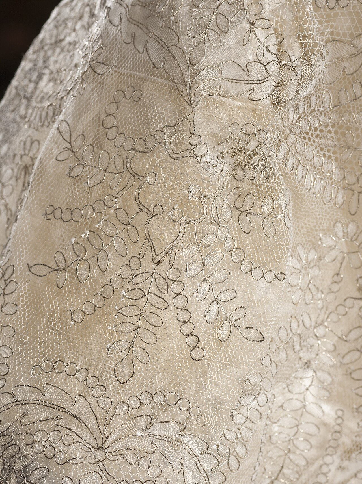
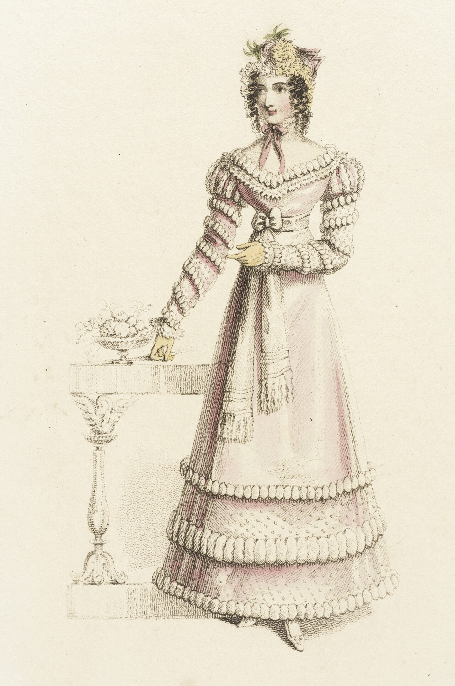
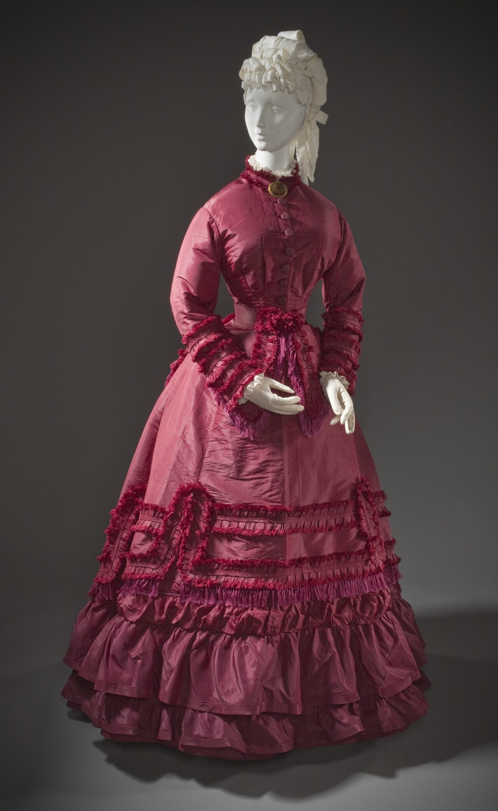

The Haute Couture Journal
In-depth technical treatises on bias-cut geometry, silk textile science, French couture stitching, corset architecture, and historical dressmaking lineage.

The Art of Bias-Cut Draping in Haute Couture Frocks
Deconstructing Madeleine Vionnet 45-degree grain mathematics, fluid silk drape kinetics, and dartless garment engineering.
Read Full Treatise →
Mulberry Silk Organza vs. Chiffon: Textile Mechanics
Analyzing momme weight density, filament tensile strength, structural opacity, and breathability in bespoke dressmaking.
Read Full Treatise →
French Seam Construction and Hand-Rolled Hems in Bespoke Dresses
Why zero raw edges are permitted in luxury dressmaking: exploring double-encapsulated seams, silk thread tension, and 1mm hems.
Read Full Treatise →The Anatomy of a Structured Frock: Corsetry & Boning
Deconstructing internal waist stays, spiral steel bones, plush velvet casing channels, and weight distribution across the ribcage.
Read Full Treatise →Care and Preservation: Maintaining Heirloom Silk Gowns
Museum-grade garment conservation: acid-free archival storage, hand-steaming protocols, botanical cedar protection, and UV shielding.
Read Full Treatise →
A Cultural History of the Frock: From Court Gowns to Haute Couture
Tracing women's silhouette evolution: 18th-century French court robes, 1920s flapper frocks, Christian Dior New Look, and modern couture.
Read Full Treatise →